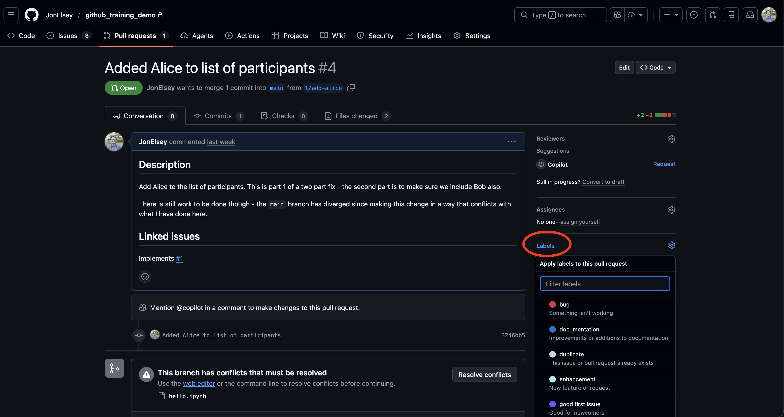

Pull Requests
Turning work into shared, reviewable progress
Setting the scene
At this point in the workflow:
Issue -> Branch -> Pull Request -> Review -> Merge -> Close
- you’ve created an Issue
- populated it with ideas, context, and notes
- committed code to your branch
At some point, you want that work to be merged into the main branch.
That means: creating a pull request (PR).
What is a pull request?
A PR is a structured way to merge a set of changes into
main, with context, discussion, and review. It is the bridge between individual work and shared code.
A PR is not a final deliverable! A PR is a way of structuring conversation around a change you want to make.
By opening up a PR you invite ideas and feedback on what you are doing in a more direct way than an Issue, and you’re more likely to whip up what you have into shape with the help of others’ ideas than you are working on it by yourself.
What a good pull request contains
Your PR should give a high‑level overview of:
- what is being changed
- why it is being changed
- how it relates to the Issue
If you’ve been using Issues well, most of this content already exists. The aim of your PR text should be to inform your code reviewer enough info they need to decide if it is ready for the main branch.
Keep your potential reviewer in the loop with your Issues
If there is a high-level problem with what you are proposing, it is better to resolve it there than after going through all the effort to implement it! Issues are where these kind of discussions should happen - your reviewer should not be blindsided by your PR.
Your reviewer is not inside your head! The more info you can provide them about the intent of your changes, the easier it is to mentally map changes to outputs.
Write a useful, succinct title to set the scene
The most important thing to get right is the title! This not only helps your reviewer to know what they are in for, but also provides a searchable reference to the PR that you can look at later.
Your title should refer to the thing that you are aiming to add with your PR - this frames the discussion you have within the PR.
Use labels

Labels are a useful way to categorise whatever problem it is you are working on. For example, a PR with the bug keyword might be a high priority for a team member to look at and therefore contribute to, or refactor might indicate that the core functionality of your code should stay the same, directing the reviewer to focus on testing whether that is the case.
Using labels like this means that someone can quickly triage whether they need to respond to your PR now or later.
Show, don’t tell
It is much easier to review code if you can demonstrate that it does what you claim.
Depending on the project, this might include:
- screenshots
- example outputs
- plots
- logs
- commands that reproduce a result
- tests (see below)
If a reviewer can quickly verify behaviour themselves, reviews are faster and less hassle.
Even better is to explicitly say how you can reproduce the results you are promising - e.g.
“run
demo/clive_flood_processing_demo.ipynbwith data fromdemo/data/test_data.ncto verify”
With tests:
- we can check that existing behaviour is retained (i.e. all the old tests pass)
- we can look at and run the tests to illustrate for ourselves that the code works as intended.
- if it doesn’t work - we can pinpoint which parts are failing and focus our time and effort into looking at interactions between the existing code and the new code here.
It is then possible to automate the process of testing for branches being PR’d into main via GitHub Actions - the PR will then automatically tell you if the tests no longer work.
Our main imago repository (the toolkit used by the RSEs to put all of your/our ideas into production) is an example of where to look - tests live in the tests folder, which are run by pytest using a GitHub Actions runner (.github/workflows/python-package.yml)
A future workshop may cover automated testing and GitHub Actions. For now, don’t worry too much about it - just know that it is something that can make your life easier for later!
Requesting reviews
Request review from someone who:
- understands the domain
- understands the part of the codebase you worked on
For large PRs:
- warn reviewers early
- split the PR into logical chunks where possible
Code does not get better by staying on your laptop.
If your code isn’t ready, you can always set up a draft PR and ask for feedback. This is like signalling intent to merge some code in, but saying that it isn’t quite ready. This lets your team take a look at your code and suggest improvements/ideas before the official code review step.
In this way, pull requests can also act as learning/teaching tools - we can pick up useful patterns/techniques from one another’s suggestions.
What not to do
- Don’t dump 5,000 lines of code with no explanation
- Don’t mix unrelated changes
- Don’t merge code without telling reviewers (for meaningful changes)
- Try not to open a PR with no Issue or context
Again, the idea here is to separate work into digestible amounts for a reviewer to look at, and do so in as clear a way as possible.
Example pull request description
# Add uncertainty propagation to processing pipeline
## Description
Adds uncertainty propagation to the processing pipeline. Applies law of propagation of uncertainty where applicable.
Where it is not, errors are assumed Gaussian and modelled with a Monte Carlo technique.
Outstanding tasks:
- Scripting to put this into the processing pipeline. Right now this is "proof of concept" and lives only in Jupyter notebooks.
- Performance optimisation - @rseperson looking for advice on where to proceed with this as I'm not sure where to start
## Related issue
Closes #42This isn’t an exhaustive list of things - it communicates the top level idea, what remains to be done, and links to an Issue where the reviewer can presumably find more information.
In Imago, we have a pull request template in most projects - simply filling this out should mean that all the information needed is there.
Key takeaways
- A pull request is more than a merge button
- More context is always useful
- Smaller PRs are almost always better
- Sharing imperfect work beats polishing in isolation